Navigation:
There is:
- Button Support: for devices like fenix, forerunner
- Touchscreen Support: for devices without buttons like Oregon 700
Main Screen
| Main Screen |
|---|
| 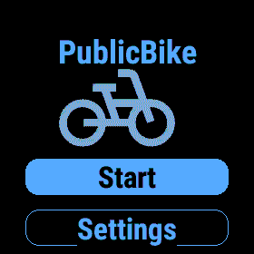 |
On the main screen, you will find two options:
- Start
- Settings
Setting the City
Before setting the city, the Bike type filters option will not be available.
| Settings | Choose country | Choose city | Settings |
|---|---|---|---|
| 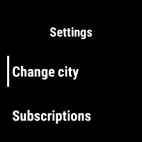 | 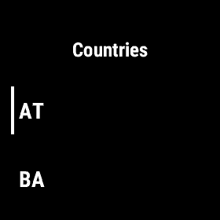 | 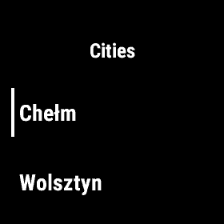 | 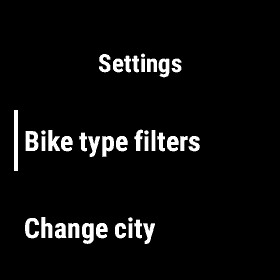 |
Filtering Bikes
You can filter bikes by type. The order of bikes is the same as in the bike list in the places list.
| Settings | Filtering |
|---|---|
| 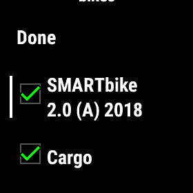 |
Searching Places
Click the Start button or use the touchscreen to begin.
| Main Screen |
|---|
You will then be directed to the places list, where you can see:
- Name of the place
- Number of bikes
- Distance to the place
| Places List |
|---|
| 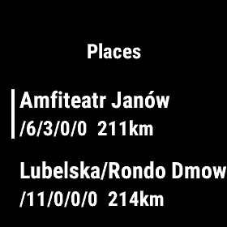 |
Please note how the number of bikes is displayed. The order of bikes follows the same sequence as the bike type filter.
| Filtering | Filtering |
|---|---|
| 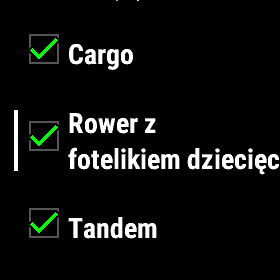 |
For example, in Amfiteatr Janów the available bikes are:
- 6 SMARTbike
- 3 Cargo
- 0 Rower z fitelkiem dziecięcym
- 0 Tandem
This design allows you to fit all the necessary information on a small screen.
Place Screen
| Place Detail |
|---|
| 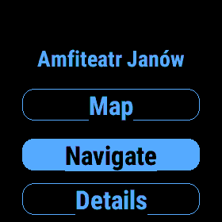 |
On this screen, you have 3 options:
| Detail Map | Place Bikes | Place Detail |
|---|---|---|
| 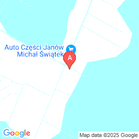 | 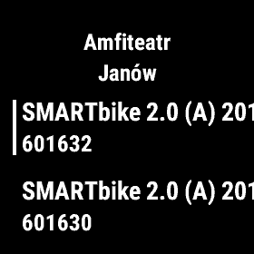 |
Subscriptions
In the Settings menu, you can find the Subscriptions page:
| Main Screen | Settings |
|---|---|
| 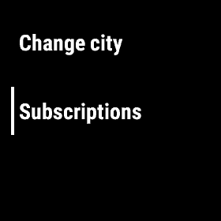 |
There can be:
- trail screen
- paid screen
| Trial | Paid |
|---|---|
| 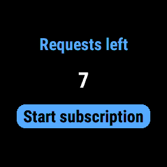 | 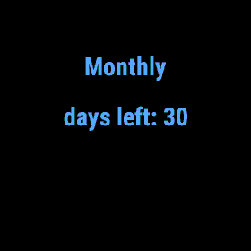 |
In case when we wan purashe subscription we should click “Start subscription”
| Subscription options | Selected option |
|---|---|
| 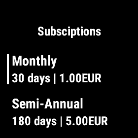 |
After clicking on “Selected option” screen you will get paypal QR code.
After payment system automatically add subscription to your profile. It can take few minutes.